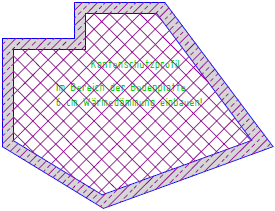
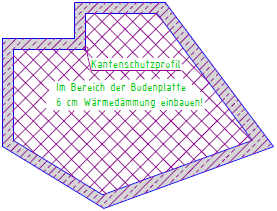
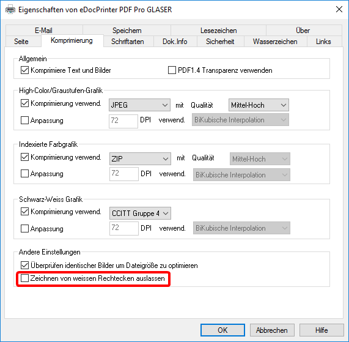
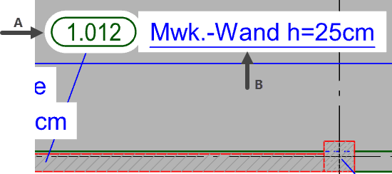
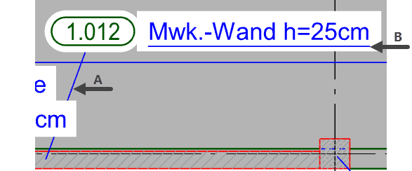
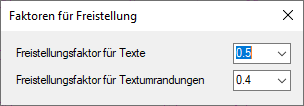

")
")
Diese Funktion dient der besseren Lesbarkeit von Texten. Ist ein Text freigestellt, werden alle Elemente im Bereich des Textes nicht dargestellt. Dies betrifft auch gesperrte Elemente [Konst3 | EleAtr → ElSper] bzw. [Untere Menüleiste | Folienmanager]. Wird ein freigestellter Text verändert oder verschoben, passt sich die Freistellfläche entsprechend an.
Das Freistellen beeinflusst keine Elemente, die sich im Hintergrund des freizustellenden Textes befinden. Diese bleiben unverändert mit allen Eigenschaften erhalten und können uneingeschränkt bearbeitet werden. Alle freigestellten Texte werden, solange Sie sich in dieser Funktion befinden, farblich hervorgehoben.
Nicht freigestellt |
Freigestellt |
 |
 |
|
Hinweise: |
|
·Freigestellte Texte werden ebenenweise ausgegeben. Ein freigestellter Text liegt oberhalb aller Elemente der eigenen und aller kleinerer Ebenen. Elemente in darüberliegenden Ebenen überzeichnen einen freigestellten Text. Siehe: Elemente in Ebenen sortieren. ·Wenn freigestellte Texte nach der PDF-Ausgabe mit dem eDocPrinter PDF Pro nicht mehr freigestellt sind:  [Datei | Drucke/Plotte | Einst | Drucker (Bereich) | Einstellungen → Komprimierung]. |

|
Tipp: |
|
Um Maßzahlen bei der Erzeugung automatisch freizustellen, setzen Sie im Dialog Maßketten Einstellungen auf der Registerkarte Maßketten einen Haken. [Konst 1 | Maßket | DefMaß | Maßketten | Darstellung → Texte freistellen]. |

1.Freistellungsfaktor eingeben
Sie können einen Freistellungsfaktor eingeben, um die Größe der Freistellung für Texte und automatisch erzeugte Umrandungen zu bestimmen. Bei Texten ergibt sich die Freistellung aus der Schriftgröße multipliziert mit dem Freistellungsfaktor. Bei Positionsnummern und anderen mit einer beliebigen Umrandung erzeugten Texten wird die Freistellung auf die Kontur angewandt.
Beispiel: Statische Position mit Zeigerlinie und unterstrichenem Ergänzungstext |
|
 |
|
A: Freistellungsfaktor für Textumrandungen; B: Freistellungsfaktor für Texte Anmerkung: Die Funktion [Konst 1 | Texte | Zeilin] legt Zeigerlinien auf die Textebene 0, wodurch sie von einem freigestellten Text und einer Textumrandung unterbrochen werden. Unterstreichungen und Umrandungen werden immer eine Ebene höher angelegt als der angeklickte Text. Dadurch wird eine Überdeckung der Elemente durch die Freistellung vermieden.  A: Zeigerlinie wird von der Freistellung unterbrochen; B: Unterstreichung bleibt sichtbar |
|
§Klicken Sie im rechten Menü auf .
Mit der sowie-Funktion können Sie den Freistellungsfaktor eines freigestellten Textes übernehmen.
§Wählen Sie im Dialog über die Dropdown-Liste den Faktor aus. Sie können auch einen Wert eingeben und mit der Tabulator- oder Eingabetaste bestätigen.
Tipp: Wenn Sie Texte freistellen, können Sie den Dialog geöffnet lassen, und die Freistellungsfaktoren anpassen. Wählen Sie anschließend die Texte erneut aus. Die Anpassung ist sofort wirksam.
 |
§Fahren Sie mit der Bearbeitung fort. [Welchen Text freistellen?].
2.Text freistellen oder Freistellung aufheben
§Wählen Sie aus einer der folgenden Funktionen, wie Texte und Textfelder freigestellt werden oder ob in den Hintergrund gestellte Elemente wieder sichtbar gemacht werden sollen. [Welchen Text freistellen?].
Funktionen |
|
|---|---|
Texteinheiten freistellen. §Klicken Sie diese Schaltfläche an, um Texte freizustellen, und wählen Sie einen Auswahlmodus. |
|
Freistellung von Texten wieder rückgängig machen. §Klicken Sie diese Schaltfläche an, um Textelemente in der ursprünglichen Ansicht darzustellen, und wählen Sie einen Auswahlmodus. |
|
Auswahlmodi |
|
|
Auswahl einer einzelnen Textzeile bzw. eines einzelnen Textfeldes. §Klicken Sie einen einzelnen Text oder einen Text mit Umrandung an. Sie können mehrere Texte nacheinander anklicken. |
|
Auswahl eines mehrzeiligen Textes oder mehrerer Texteinheiten/Textfelder. §Ziehen Sie einen Rahmen um die Texte. Klicken Sie dazu den Punkt an, vom dem aus der Rahmen aufgezogen werden soll [1. Punkt], lassen Sie die Maustaste los und bewegen Sie den Cursor bis zur gewünschten Rahmengröße. Mit Linksklick stellen Sie die Texte frei. [2. Punkt]. |


Zugehörige Referenzen: